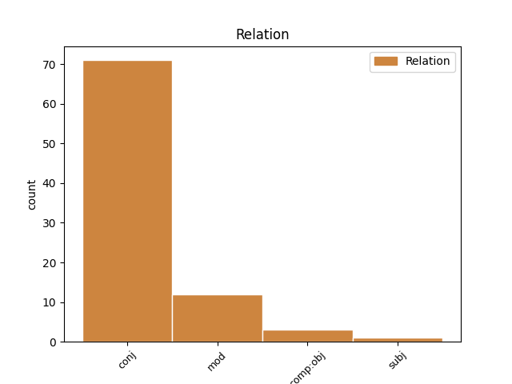
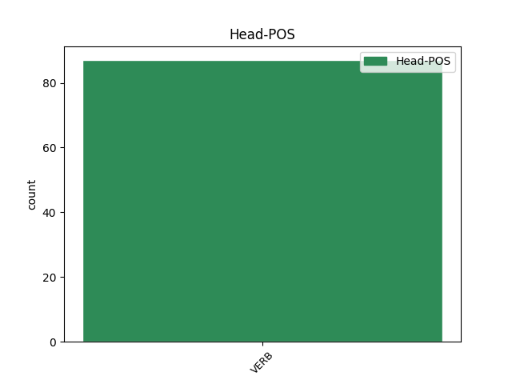
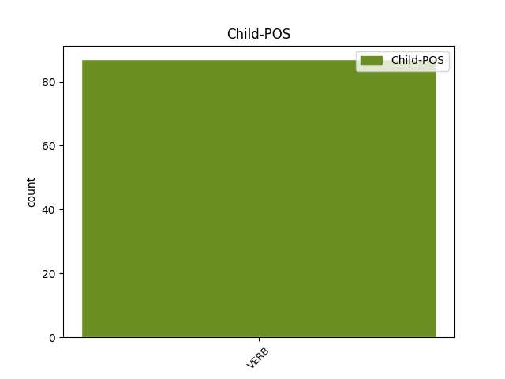

Distribution of features within this leaf



Agreement Rules sorted by frequency.
- When the dependent token is the conjunct(conj) of the head token, and the head token is VERB and the dependent token is VERB.
1 Costa-Gavras _ _ _ _ 0 _ _ _
2 , _ _ _ _ 0 _ _ _
3 con _ _ _ _ 0 _ _ _
4 a _ _ _ _ 0 _ _ _
5 súa _ _ _ _ 0 _ _ _
6 película _ _ _ _ 0 _ _ _
7 Le _ _ _ _ 0 _ _ _
8 Couperet _ _ _ _ 0 _ _ _
9 , _ _ _ _ 0 _ _ _
10 acaba _ _ _ _ 0 _ _ _
11 de _ _ _ _ 0 _ _ _
12 resaltar _ _ _ _ 0 _ _ _
13 de _ _ _ _ 0 _ _ _
14 forma _ _ _ _ 0 _ _ _
15 dramática _ _ _ _ 0 _ _ _
16 cómo _ _ _ _ 0 _ _ _
17 humilla _ _ _ _ 0 _ _ _
18 , _ _ _ _ 0 _ _ _
19 aniquila aniquilar VERB Vpi30s Mood=Ind|Number=Sing|Person=3|Tense=Pres|VerbForm=Fin 0 _ _ _
20 , _ _ _ _ 0 _ _ _
21 deprime deprimir VERB Vpi30s Mood=Ind|Number=Sing|Person=3|Tense=Pres|VerbForm=Fin 19 conj _ _
22 e _ _ _ _ 0 _ _ _
23 até _ _ _ _ 0 _ _ _
24 pode _ _ _ _ 0 _ _ _
25 volver _ _ _ _ 0 _ _ _
26 a _ _ _ _ 0 _ _ _
27 un _ _ _ _ 0 _ _ _
28 tolo _ _ _ _ 0 _ _ _
29 a _ _ _ _ 0 _ _ _
30 perda _ _ _ _ 0 _ _ _
31 de _ _ _ _ 0 _ _ _
32 o _ _ _ _ 0 _ _ _
33 traballo _ _ _ _ 0 _ _ _
34 . _ _ _ _ 0 _ _ _
1 Os _ _ _ _ 0 _ _ _
2 estaleiros _ _ _ _ 0 _ _ _
3 de _ _ _ _ 0 _ _ _
4 Ferrol _ _ _ _ 0 _ _ _
5 , _ _ _ _ 0 _ _ _
6 que _ _ _ _ 0 _ _ _
7 ocupaban ocupar VERB Vii30p Mood=Ind|Number=Plur|Person=3|Tense=Imp|VerbForm=Fin 0 _ _ _
8 arredor _ _ _ _ 0 _ _ _
9 de _ _ _ _ 0 _ _ _
10 14.000 _ _ _ _ 0 _ _ _
11 traballadores _ _ _ _ 0 _ _ _
12 cando _ _ _ _ 0 _ _ _
13 corrían correr VERB Vii30p Mood=Ind|Number=Plur|Person=3|Tense=Imp|VerbForm=Fin 7 mod _ _
14 os _ _ _ _ 0 _ _ _
15 anos _ _ _ _ 0 _ _ _
16 70 _ _ _ _ 0 _ _ _
17 , _ _ _ _ 0 _ _ _
18 fican _ _ _ _ 0 _ _ _
19 agora _ _ _ _ 0 _ _ _
20 atendidos _ _ _ _ 0 _ _ _
21 por _ _ _ _ 0 _ _ _
22 2.000 _ _ _ _ 0 _ _ _
23 , _ _ _ _ 0 _ _ _
24 en _ _ _ _ 0 _ _ _
25 a _ _ _ _ 0 _ _ _
26 súa _ _ _ _ 0 _ _ _
27 maior _ _ _ _ 0 _ _ _
28 parte _ _ _ _ 0 _ _ _
29 administrativos _ _ _ _ 0 _ _ _
30 e _ _ _ _ 0 _ _ _
31 técnicos _ _ _ _ 0 _ _ _
32 . _ _ _ _ 0 _ _ _
1 Esta _ _ _ _ 0 _ _ _
2 película _ _ _ _ 0 _ _ _
3 , _ _ _ _ 0 _ _ _
4 moi _ _ _ _ 0 _ _ _
5 cinxida _ _ _ _ 0 _ _ _
6 a _ _ _ _ 0 _ _ _
7 o _ _ _ _ 0 _ _ _
8 que _ _ _ _ 0 _ _ _
9 pretende _ _ _ _ 0 _ _ _
10 narrar _ _ _ _ 0 _ _ _
11 , _ _ _ _ 0 _ _ _
12 eses _ _ _ _ 0 _ _ _
13 últimos _ _ _ _ 0 _ _ _
14 días _ _ _ _ 0 _ _ _
15 de _ _ _ _ 0 _ _ _
16 a _ _ _ _ 0 _ _ _
17 guerra _ _ _ _ 0 _ _ _
18 , _ _ _ _ 0 _ _ _
19 non _ _ _ _ 0 _ _ _
20 evita _ _ _ _ 0 _ _ _
21 non _ _ _ _ 0 _ _ _
22 embargante _ _ _ _ 0 _ _ _
23 ( _ _ _ _ 0 _ _ _
24 e _ _ _ _ 0 _ _ _
25 pese pesar VERB Vps30s Mood=Sub|Number=Sing|Person=3|Tense=Pres|VerbForm=Fin 29 comp:obj _ _
26 a _ _ _ _ 0 _ _ _
27 o _ _ _ _ 0 _ _ _
28 que _ _ _ _ 0 _ _ _
29 diga dicir VERB Vps30s Mood=Sub|Number=Sing|Person=3|Tense=Pres|VerbForm=Fin 0 _ _ _
30 Wenders _ _ _ _ 0 _ _ _
31 ) _ _ _ _ 0 _ _ _
32 algúns _ _ _ _ 0 _ _ _
33 pertinentes _ _ _ _ 0 _ _ _
34 punteos _ _ _ _ 0 _ _ _
35 que _ _ _ _ 0 _ _ _
36 contextualizan _ _ _ _ 0 _ _ _
37 os _ _ _ _ 0 _ _ _
38 feitos _ _ _ _ 0 _ _ _
39 . _ _ _ _ 0 _ _ _
1 Por _ _ _ _ 0 _ _ _
2 iso _ _ _ _ 0 _ _ _
3 tamén _ _ _ _ 0 _ _ _
4 pediremos _ _ _ _ 0 _ _ _
5 que _ _ _ _ 0 _ _ _
6 se _ _ _ _ 0 _ _ _
7 limiten _ _ _ _ 0 _ _ _
8 as _ _ _ _ 0 _ _ _
9 prazas _ _ _ _ 0 _ _ _
10 en _ _ _ _ 0 _ _ _
11 a _ _ _ _ 0 _ _ _
12 Facultade _ _ _ _ 0 _ _ _
13 , _ _ _ _ 0 _ _ _
14 con _ _ _ _ 0 _ _ _
15 o _ _ _ _ 0 _ _ _
16 obxectivo _ _ _ _ 0 _ _ _
17 de _ _ _ _ 0 _ _ _
18 que _ _ _ _ 0 _ _ _
19 quen _ _ _ _ 0 _ _ _
20 se _ _ _ _ 0 _ _ _
21 licencie licenciar VERB Vps30s Mood=Sub|Number=Sing|Person=3|Tense=Pres|VerbForm=Fin 22 subj _ _
22 teña ter VERB Vps30s Mood=Sub|Number=Sing|Person=3|Tense=Pres|VerbForm=Fin 0 _ _ _
23 unhas _ _ _ _ 0 _ _ _
24 condicións _ _ _ _ 0 _ _ _
25 salariais _ _ _ _ 0 _ _ _
26 dignas _ _ _ _ 0 _ _ _
27 . _ _ _ _ 0 _ _ _
Disagree Examples:
1 Roberto _ _ _ _ 0 _ _ _
2 Blanco _ _ _ _ 0 _ _ _
3 Valdés _ _ _ _ 0 _ _ _
4 afirma _ _ _ _ 0 _ _ _
5 que _ _ _ _ 0 _ _ _
6 " _ _ _ _ 0 _ _ _
7 Touriño _ _ _ _ 0 _ _ _
8 pode _ _ _ _ 0 _ _ _
9 seguir _ _ _ _ 0 _ _ _
10 con _ _ _ _ 0 _ _ _
11 a _ _ _ _ 0 _ _ _
12 súa _ _ _ _ 0 _ _ _
13 retórica _ _ _ _ 0 _ _ _
14 , _ _ _ _ 0 _ _ _
15 pero _ _ _ _ 0 _ _ _
16 é _ _ _ _ 0 _ _ _
17 como _ _ _ _ 0 _ _ _
18 se _ _ _ _ 0 _ _ _
19 aspirase _ _ _ _ 0 _ _ _
20 a _ _ _ _ 0 _ _ _
21 tocar _ _ _ _ 0 _ _ _
22 a _ _ _ _ 0 _ _ _
23 lúa _ _ _ _ 0 _ _ _
24 con _ _ _ _ 0 _ _ _
25 a _ _ _ _ 0 _ _ _
26 man _ _ _ _ 0 _ _ _
27 " _ _ _ _ 0 _ _ _
28 porque _ _ _ _ 0 _ _ _
29 " _ _ _ _ 0 _ _ _
30 non _ _ _ _ 0 _ _ _
31 hai haber VERB Vpi30s Mood=Ind|Number=Sing|Person=3|Tense=Pres|VerbForm=Fin 0 _ _ _
32 agora _ _ _ _ 0 _ _ _
33 , _ _ _ _ 0 _ _ _
34 nin _ _ _ _ 0 _ _ _
35 existiu existir VERB Vei30s Mood=Ind|Number=Sing|Person=3|Tense=Past|VerbForm=Fin 31 conj _ _
36 nunca _ _ _ _ 0 _ _ _
37 un _ _ _ _ 0 _ _ _
38 só _ _ _ _ 0 _ _ _
39 estudo _ _ _ _ 0 _ _ _
40 de _ _ _ _ 0 _ _ _
41 opinión _ _ _ _ 0 _ _ _
42 que _ _ _ _ 0 _ _ _
43 lle _ _ _ _ 0 _ _ _
44 atribúa _ _ _ _ 0 _ _ _
45 a _ _ _ _ 0 _ _ _
46 maioría _ _ _ _ 0 _ _ _
47 absoluta _ _ _ _ 0 _ _ _
48 a _ _ _ _ 0 _ _ _
49 o _ _ _ _ 0 _ _ _
50 Partido _ _ _ _ 0 _ _ _
51 Socialista _ _ _ _ 0 _ _ _
52 " _ _ _ _ 0 _ _ _
53 . _ _ _ _ 0 _ _ _
1 Mais _ _ _ _ 0 _ _ _
2 para _ _ _ _ 0 _ _ _
3 alén _ _ _ _ 0 _ _ _
4 de _ _ _ _ 0 _ _ _
5 os _ _ _ _ 0 _ _ _
6 contidos _ _ _ _ 0 _ _ _
7 concretos _ _ _ _ 0 _ _ _
8 de _ _ _ _ 0 _ _ _
9 o _ _ _ _ 0 _ _ _
10 documento _ _ _ _ 0 _ _ _
11 cómpre _ _ _ _ 0 _ _ _
12 destacar _ _ _ _ 0 _ _ _
13 a _ _ _ _ 0 _ _ _
14 relevancia _ _ _ _ 0 _ _ _
15 política _ _ _ _ 0 _ _ _
16 e _ _ _ _ 0 _ _ _
17 social _ _ _ _ 0 _ _ _
18 de _ _ _ _ 0 _ _ _
19 un _ _ _ _ 0 _ _ _
20 acto _ _ _ _ 0 _ _ _
21 en _ _ _ _ 0 _ _ _
22 o _ _ _ _ 0 _ _ _
23 que _ _ _ _ 0 _ _ _
24 , _ _ _ _ 0 _ _ _
25 arredor _ _ _ _ 0 _ _ _
26 de _ _ _ _ 0 _ _ _
27 o _ _ _ _ 0 _ _ _
28 nacionalismo _ _ _ _ 0 _ _ _
29 organizado _ _ _ _ 0 _ _ _
30 en _ _ _ _ 0 _ _ _
31 o _ _ _ _ 0 _ _ _
32 BNG _ _ _ _ 0 _ _ _
33 , _ _ _ _ 0 _ _ _
34 persoas _ _ _ _ 0 _ _ _
35 que _ _ _ _ 0 _ _ _
36 discreparon discrepar VERB Vei30p Mood=Ind|Number=Plur|Person=3|Tense=Past|VerbForm=Fin 0 _ _ _
37 e _ _ _ _ 0 _ _ _
38 discrepan discrepar VERB Vpi30p Mood=Ind|Number=Plur|Person=3|Tense=Pres|VerbForm=Fin 36 conj _ _
39 con _ _ _ _ 0 _ _ _
40 algúns _ _ _ _ 0 _ _ _
41 de _ _ _ _ 0 _ _ _
42 os _ _ _ _ 0 _ _ _
43 seus _ _ _ _ 0 _ _ _
44 posicionamentos _ _ _ _ 0 _ _ _
45 e _ _ _ _ 0 _ _ _
46 decisións _ _ _ _ 0 _ _ _
47 ( _ _ _ _ 0 _ _ _
48 como _ _ _ _ 0 _ _ _
49 ben _ _ _ _ 0 _ _ _
50 recentemente _ _ _ _ 0 _ _ _
51 se _ _ _ _ 0 _ _ _
52 puxo _ _ _ _ 0 _ _ _
53 de _ _ _ _ 0 _ _ _
54 manifesto _ _ _ _ 0 _ _ _
55 a _ _ _ _ 0 _ _ _
56 respeito _ _ _ _ 0 _ _ _
57 de _ _ _ _ 0 _ _ _
58 o _ _ _ _ 0 _ _ _
59 Tratado _ _ _ _ 0 _ _ _
60 Constitucional _ _ _ _ 0 _ _ _
61 de _ _ _ _ 0 _ _ _
62 a _ _ _ _ 0 _ _ _
63 Unión _ _ _ _ 0 _ _ _
64 Europea _ _ _ _ 0 _ _ _
65 ) _ _ _ _ 0 _ _ _
66 foron _ _ _ _ 0 _ _ _
67 capaces _ _ _ _ 0 _ _ _
68 de _ _ _ _ 0 _ _ _
69 traballar _ _ _ _ 0 _ _ _
70 xuntos _ _ _ _ 0 _ _ _
71 debatendo _ _ _ _ 0 _ _ _
72 as _ _ _ _ 0 _ _ _
73 diferenzas _ _ _ _ 0 _ _ _
74 mais _ _ _ _ 0 _ _ _
75 , _ _ _ _ 0 _ _ _
76 sobre _ _ _ _ 0 _ _ _
77 todo _ _ _ _ 0 _ _ _
78 , _ _ _ _ 0 _ _ _
79 resaltando _ _ _ _ 0 _ _ _
80 as _ _ _ _ 0 _ _ _
81 coincidencias _ _ _ _ 0 _ _ _
82 e _ _ _ _ 0 _ _ _
83 , _ _ _ _ 0 _ _ _
84 de _ _ _ _ 0 _ _ _
85 entre _ _ _ _ 0 _ _ _
86 elas _ _ _ _ 0 _ _ _
87 , _ _ _ _ 0 _ _ _
88 unha _ _ _ _ 0 _ _ _
89 fundamental _ _ _ _ 0 _ _ _
90 : _ _ _ _ 0 _ _ _
91 a _ _ _ _ 0 _ _ _
92 defensa _ _ _ _ 0 _ _ _
93 de _ _ _ _ 0 _ _ _
94 Galiza _ _ _ _ 0 _ _ _
95 e _ _ _ _ 0 _ _ _
96 a _ _ _ _ 0 _ _ _
97 confianza _ _ _ _ 0 _ _ _
98 en _ _ _ _ 0 _ _ _
99 as _ _ _ _ 0 _ _ _
100 súas _ _ _ _ 0 _ _ _
101 potencialidades _ _ _ _ 0 _ _ _
102 . _ _ _ _ 0 _ _ _
1 Houbo _ _ _ _ 0 _ _ _
2 quen _ _ _ _ 0 _ _ _
3 nomeou _ _ _ _ 0 _ _ _
4 en _ _ _ _ 0 _ _ _
5 esa _ _ _ _ 0 _ _ _
6 comisión _ _ _ _ 0 _ _ _
7 o _ _ _ _ 0 _ _ _
8 medo _ _ _ _ 0 _ _ _
9 a _ _ _ _ 0 _ _ _
10 as _ _ _ _ 0 _ _ _
11 represalias _ _ _ _ 0 _ _ _
12 que _ _ _ _ 0 _ _ _
13 sufrían _ _ _ _ 0 _ _ _
14 os _ _ _ _ 0 _ _ _
15 traballadores _ _ _ _ 0 _ _ _
16 de _ _ _ _ 0 _ _ _
17 o _ _ _ _ 0 _ _ _
18 mar _ _ _ _ 0 _ _ _
19 , _ _ _ _ 0 _ _ _
20 como _ _ _ _ 0 _ _ _
21 estaban _ _ _ _ 0 _ _ _
22 atados _ _ _ _ 0 _ _ _
23 a _ _ _ _ 0 _ _ _
24 as _ _ _ _ 0 _ _ _
25 subvencións _ _ _ _ 0 _ _ _
26 , _ _ _ _ 0 _ _ _
27 a _ _ _ _ 0 _ _ _
28 as _ _ _ _ 0 _ _ _
29 prevendas _ _ _ _ 0 _ _ _
30 ofrecidas _ _ _ _ 0 _ _ _
31 por _ _ _ _ 0 _ _ _
32 lo _ _ _ _ 0 _ _ _
33 poder _ _ _ _ 0 _ _ _
34 , _ _ _ _ 0 _ _ _
35 e _ _ _ _ 0 _ _ _
36 certas _ _ _ _ 0 _ _ _
37 afirmacións _ _ _ _ 0 _ _ _
38 que _ _ _ _ 0 _ _ _
39 falaban _ _ _ _ 0 _ _ _
40 de _ _ _ _ 0 _ _ _
41 a _ _ _ _ 0 _ _ _
42 coordinación _ _ _ _ 0 _ _ _
43 , _ _ _ _ 0 _ _ _
44 de _ _ _ _ 0 _ _ _
45 a _ _ _ _ 0 _ _ _
46 atención _ _ _ _ 0 _ _ _
47 recibida _ _ _ _ 0 _ _ _
48 por _ _ _ _ 0 _ _ _
49 la _ _ _ _ 0 _ _ _
50 Administración _ _ _ _ 0 _ _ _
51 ou _ _ _ _ 0 _ _ _
52 de _ _ _ _ 0 _ _ _
53 a _ _ _ _ 0 _ _ _
54 preocupación _ _ _ _ 0 _ _ _
55 que _ _ _ _ 0 _ _ _
56 a _ _ _ _ 0 _ _ _
57 patroa _ _ _ _ 0 _ _ _
58 de _ _ _ _ 0 _ _ _
59 o _ _ _ _ 0 _ _ _
60 Vicedo _ _ _ _ 0 _ _ _
61 puido _ _ _ _ 0 _ _ _
62 observar _ _ _ _ 0 _ _ _
63 en _ _ _ _ 0 _ _ _
64 o _ _ _ _ 0 _ _ _
65 " _ _ _ _ 0 _ _ _
66 meu _ _ _ _ 0 _ _ _
67 presidente _ _ _ _ 0 _ _ _
68 Aznar _ _ _ _ 0 _ _ _
69 " _ _ _ _ 0 _ _ _
70 , _ _ _ _ 0 _ _ _
71 Faustina _ _ _ _ 0 _ _ _
72 Solloso _ _ _ _ 0 _ _ _
73 _ _ _ _ _ 0 _ _ _
74 a _ _ _ _ 0 _ _ _
75 o _ _ _ _ 0 _ _ _
76 mesmo _ _ _ _ 0 _ _ _
77 tempo _ _ _ _ 0 _ _ _
78 concelleira _ _ _ _ 0 _ _ _
79 e _ _ _ _ 0 _ _ _
80 dirixente _ _ _ _ 0 _ _ _
81 de _ _ _ _ 0 _ _ _
82 o _ _ _ _ 0 _ _ _
83 PP _ _ _ _ 0 _ _ _
84 en _ _ _ _ 0 _ _ _
85 a _ _ _ _ 0 _ _ _
86 zona _ _ _ _ 0 _ _ _
87 _ _ _ _ _ 0 _ _ _
88 , _ _ _ _ 0 _ _ _
89 viña _ _ _ _ 0 _ _ _
90 certificar _ _ _ _ 0 _ _ _
91 que _ _ _ _ 0 _ _ _
92 estas _ _ _ _ 0 _ _ _
93 presións _ _ _ _ 0 _ _ _
94 existen existir VERB Vpi30p Mood=Ind|Number=Plur|Person=3|Tense=Pres|VerbForm=Fin 0 _ _ _
95 e _ _ _ _ 0 _ _ _
96 que _ _ _ _ 0 _ _ _
97 os _ _ _ _ 0 _ _ _
98 comparecentes _ _ _ _ 0 _ _ _
99 chamados _ _ _ _ 0 _ _ _
100 por _ _ _ _ 0 _ _ _
101 lo _ _ _ _ 0 _ _ _
102 PP _ _ _ _ 0 _ _ _
103 viñeron vir VERB Vei30p Mood=Ind|Number=Plur|Person=3|Tense=Past|VerbForm=Fin 94 conj _ _
104 falar _ _ _ _ 0 _ _ _
105 non _ _ _ _ 0 _ _ _
106 como _ _ _ _ 0 _ _ _
107 afectados _ _ _ _ 0 _ _ _
108 senón _ _ _ _ 0 _ _ _
109 como _ _ _ _ 0 _ _ _
110 comisarios _ _ _ _ 0 _ _ _
111 políticos _ _ _ _ 0 _ _ _
112 . _ _ _ _ 0 _ _ _
1 Teñen _ _ _ _ 0 _ _ _
2 que _ _ _ _ 0 _ _ _
3 saber _ _ _ _ 0 _ _ _
4 que _ _ _ _ 0 _ _ _
5 non _ _ _ _ 0 _ _ _
6 había haber VERB Vii30s Mood=Ind|Number=Sing|Person=3|Tense=Imp|VerbForm=Fin 0 _ _ _
7 ningún _ _ _ _ 0 _ _ _
8 plano _ _ _ _ 0 _ _ _
9 serio _ _ _ _ 0 _ _ _
10 para _ _ _ _ 0 _ _ _
11 facer _ _ _ _ 0 _ _ _
12 lle _ _ _ _ 0 _ _ _
13 fronte _ _ _ _ 0 _ _ _
14 a _ _ _ _ 0 _ _ _
15 o _ _ _ _ 0 _ _ _
16 chapapote _ _ _ _ 0 _ _ _
17 en _ _ _ _ 0 _ _ _
18 as _ _ _ _ 0 _ _ _
19 rías _ _ _ _ 0 _ _ _
20 , _ _ _ _ 0 _ _ _
21 o _ _ _ _ 0 _ _ _
22 único _ _ _ _ 0 _ _ _
23 eran _ _ _ _ 0 _ _ _
24 os _ _ _ _ 0 _ _ _
25 plásticos _ _ _ _ 0 _ _ _
26 para _ _ _ _ 0 _ _ _
27 defender _ _ _ _ 0 _ _ _
28 as _ _ _ _ 0 _ _ _
29 bateas _ _ _ _ 0 _ _ _
30 e _ _ _ _ 0 _ _ _
31 dirixir _ _ _ _ 0 _ _ _
32 o _ _ _ _ 0 _ _ _
33 fuel _ _ _ _ 0 _ _ _
34 a _ _ _ _ 0 _ _ _
35 as _ _ _ _ 0 _ _ _
36 zonas _ _ _ _ 0 _ _ _
37 de _ _ _ _ 0 _ _ _
38 sacrificio _ _ _ _ 0 _ _ _
39 internas _ _ _ _ 0 _ _ _
40 , _ _ _ _ 0 _ _ _
41 que _ _ _ _ 0 _ _ _
42 non _ _ _ _ 0 _ _ _
43 se _ _ _ _ 0 _ _ _
44 puxeron _ _ _ _ 0 _ _ _
45 as _ _ _ _ 0 _ _ _
46 barreiras _ _ _ _ 0 _ _ _
47 prometidas _ _ _ _ 0 _ _ _
48 , _ _ _ _ 0 _ _ _
49 que _ _ _ _ 0 _ _ _
50 as _ _ _ _ 0 _ _ _
51 quixeron _ _ _ _ 0 _ _ _
52 poñer _ _ _ _ 0 _ _ _
53 as _ _ _ _ 0 _ _ _
54 romperon romper VERB Vei30p Mood=Ind|Number=Plur|Person=3|Tense=Past|VerbForm=Fin 6 conj _ _
55 os _ _ _ _ 0 _ _ _
56 propios _ _ _ _ 0 _ _ _
57 técnicos _ _ _ _ 0 _ _ _
58 de _ _ _ _ 0 _ _ _
59 SASEMAR _ _ _ _ 0 _ _ _
60 . _ _ _ _ 0 _ _ _
1 Os _ _ _ _ 0 _ _ _
2 ianquis _ _ _ _ 0 _ _ _
3 tiñan ter VERB Vii30p Mood=Ind|Number=Plur|Person=3|Tense=Imp|VerbForm=Fin 0 _ _ _
4 en _ _ _ _ 0 _ _ _
5 as _ _ _ _ 0 _ _ _
6 follas _ _ _ _ 0 _ _ _
7 de _ _ _ _ 0 _ _ _
8 as _ _ _ _ 0 _ _ _
9 invasións _ _ _ _ 0 _ _ _
10 , _ _ _ _ 0 _ _ _
11 moitos _ _ _ _ 0 _ _ _
12 anos _ _ _ _ 0 _ _ _
13 antes _ _ _ _ 0 _ _ _
14 de _ _ _ _ 0 _ _ _
15 entrar _ _ _ _ 0 _ _ _
16 en _ _ _ _ 0 _ _ _
17 o _ _ _ _ 0 _ _ _
18 Iraque _ _ _ _ 0 _ _ _
19 a _ _ _ _ 0 _ _ _
20 sangue _ _ _ _ 0 _ _ _
21 e _ _ _ _ 0 _ _ _
22 lume _ _ _ _ 0 _ _ _
23 , _ _ _ _ 0 _ _ _
24 a _ _ _ _ 0 _ _ _
25 Siria _ _ _ _ 0 _ _ _
26 e _ _ _ _ 0 _ _ _
27 Irán _ _ _ _ 0 _ _ _
28 , _ _ _ _ 0 _ _ _
29 como _ _ _ _ 0 _ _ _
30 eixes _ _ _ _ 0 _ _ _
31 de _ _ _ _ 0 _ _ _
32 o _ _ _ _ 0 _ _ _
33 mal _ _ _ _ 0 _ _ _
34 , _ _ _ _ 0 _ _ _
35 e _ _ _ _ 0 _ _ _
36 agora _ _ _ _ 0 _ _ _
37 queren querer VERB Vpi30p Mood=Ind|Number=Plur|Person=3|Tense=Pres|VerbForm=Fin 3 conj _ _
38 cumprir _ _ _ _ 0 _ _ _
39 outro _ _ _ _ 0 _ _ _
40 xenocidio _ _ _ _ 0 _ _ _
41 . _ _ _ _ 0 _ _ _